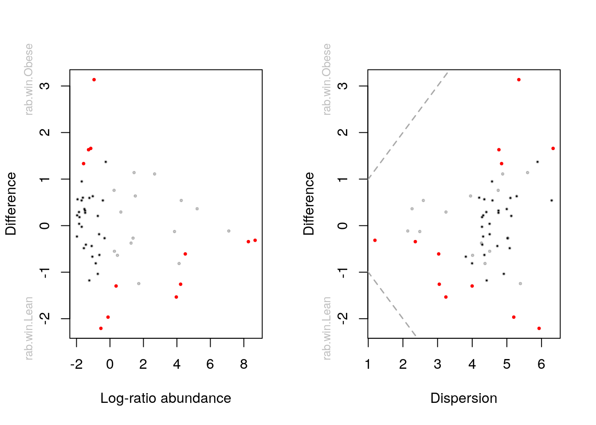
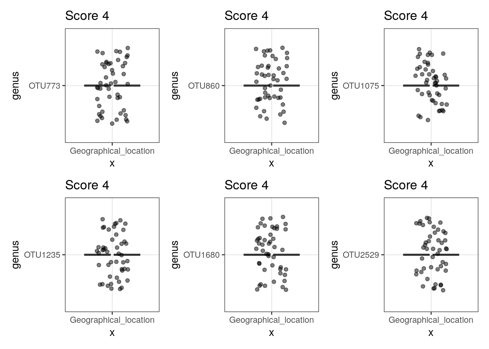
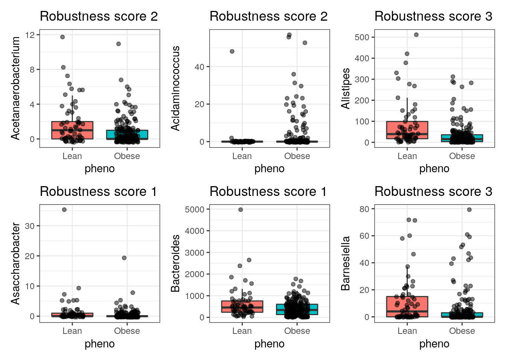
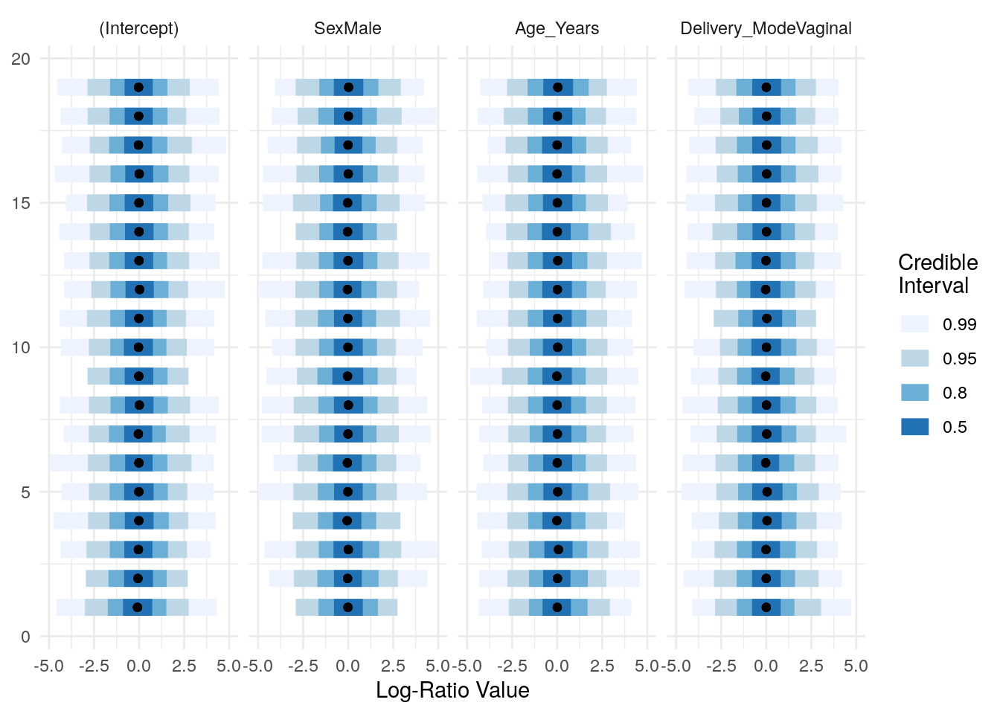
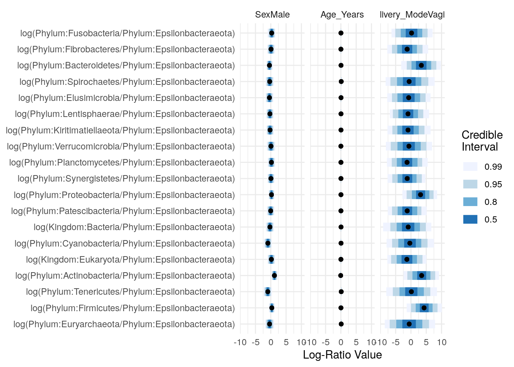
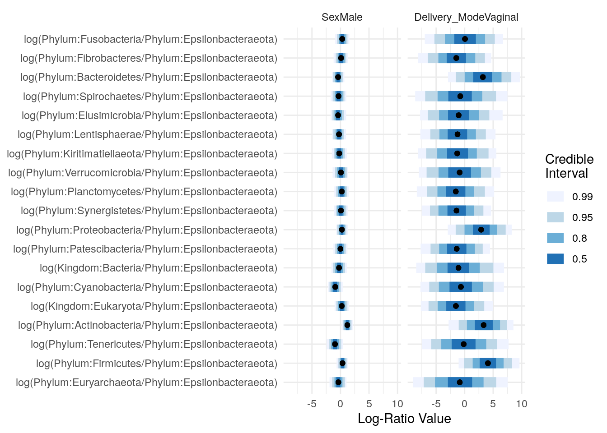

Chapter 11 Differential Abundance
11.1 Introduction to differential abundance analysis
What is differential abundance analysis (DAA) and why do we do it?
In this section we will work with one of the openly available datasets in mia to illustrate how to perform differential abundance analysis (DAA). DAA aims to identify differences in taxon abundance between two or more groups (e.g. treatment vs control) for each taxon of a sample. This can be performed at any phylogenetic level but we will work at Genus level abundances in this section. We perform DAA to identify biomarkers and/or gain understanding of a complex system by looking at its isolated components. For example, identifying that a bacterial taxon is different between e.g. a patient group with disease X vs a healthy control group might lead to important insights into the pathophysiology. Changes in the microbiota might be causal or a consequence of the disease. Either way, it can help to understand the system as a whole. Be aware that this approach has also been criticized recently.
How to do DAA
There are many tools to perform DAA. The most popular tools, without going into
evaluating whether or not they perform well for this task, are:
- ALDEx2
- ANCOM-BC
- corncob
- DESeq2
- edgeR
- LEFse
- MaAsLin2
- metagenomeSeq
- limma voom
- t-test
- Wilcoxon test
We recommend you to have a look at Nearing et al. (2021) who compared all these listed methods across 38 different datasets. Because different methods have different approaches (parametric vs non-parametric, different normalization techiniques etc.) to perform the same task (test differential abundance), results can differ between methods. Unfortunately, as Nearing et al. (2021) point out, they differ disturbingly much. Therefore, it is highly recommended to pick several methods to get an idea about how robust and potentially reproducible your findings are depending on the method. In this section we demonstrate 3 methods that can be recommended based on this recent review (ANCOM-BC, ALDEx2 and Maaslin2) and we will compare the results between them. Note that the purpose of this section is to show how to perform DAA in R, not how to correctly do causal inference. E.g. there might be confounding factors that might drive (the absence of) differences between the shown groups that we ignore for simplicity. However, we will show how you could include covariates in those models. Furthermore, we picked a dataset that merely has microbial abundances in a TSE object as well as a grouping variable in the sample data. We simplify the analysis by only including 2 of the 3 groups.
library(mia)
library(patchwork)
library(tidySummarizedExperiment)
library(ANCOMBC)
library(ALDEx2)
library(Maaslin2)
library(knitr)
library(tidyverse)
# we use the dmn_se dataset and restrict it to
# obese vs lean for easy illustration
data(dmn_se)
tse <- dmn_se
tse <- tse[ ,colData(tse)$pheno != "Overwt"]
colData(tse)$pheno <- fct_drop(colData(tse)$pheno, "Overwt")
# how many observations do we have per group?
count(as.data.frame(colData(tse)), pheno) %>% kable()| pheno | n |
|---|---|
| Lean | 61 |
| Obese | 193 |
# set a seed because some tools can randomly vary and then produce
# different results:
set.seed(1)11.1.1 Prevalence Filtering
Before we jump to our analyses, we may want to perform prevalence filtering.
Nearing et al. (2021) found that applying a 10% threshold for the prevalence of
the taxa generally resulted in more robust results. Some tools have builtin
arguments for that. By applying the threshold to our input data, we can make
sure it is applied for all tools. Below we show how to do this in mia:
tse <- subsetByPrevalentTaxa(tse, detection = 0, prevalence = 0.1)11.1.2 ALDEx2
In this section, we will show how to perform a simple ALDEx2 analysis. If you
would choose to pick a single method, this method could be recommended to use.
According to the developers experience, it tends to identify the common
features identified by other methods. This statement is in line with a recent
independent evaluation by Nearing et al. (2021). Please also have a look at
the more extensive vignette
that covers this flexible tool in more depth. ALDEx2 estimates technical
variation within each sample per taxon by utilizing the Dirichlet distribution.
It furthermore applies the centered-log-ratio transformation (or closely
related log-ratio transforms). Depending on the experimental setup, it will
perform a two sample Welch’s T-test and Wilcoxon-test or a one-way ANOVA and
Kruskal-Wallis-test. For more complex study designs, there is a possibility to
utilize the glm functionality within ALDEx2. The Benjamini-Hochberg procedure
is applied in any case to correct for multiple testing. Below we show a simple
example that illustrates the workflow.
# Generate Monte Carlo samples of the Dirichlet distribution for each sample.
# Convert each instance using the centred log-ratio transform.
# This is the input for all further analyses.
x <- aldex.clr(
reads = assay(tse),
conds = colData(tse)$pheno,
# 128 recommened for ttest, 1000 for rigorous effect size calculation
mc.samples = 128,
denom = "all",
verbose = FALSE
)
# calculates expected values of the Welch's t-test and Wilcoxon rank test on
# the data returned by aldex.clr
x_tt <- aldex.ttest(
x,
paired.test = FALSE,
verbose = FALSE)
# determines the median clr abundance of the feature in all samples and in
# groups, the median difference between the two groups, the median variation
# within each group and the effect size, which is the median of the ratio
# of the between group difference and the larger of the variance within groups
x_effect <- aldex.effect(x, CI = TRUE, verbose = FALSE)
# combine all outputs
aldex_out <- data.frame(x_tt, x_effect)Now, we can create a so called Bland-Altman or MA plot (left). It shows the association between the relative abundance and the magnitude of the difference per sample. Next to that, we can also create a plot that shows the dispersion on the x-axis instead of log-ratio abundance. Red dots represent genera that are differentially abundant (\(q \leq 0.1\)) between the 2 groups. Black points are rare taxa and grey ones are abundant taxa.
par(mfrow = c(1, 2))
aldex.plot(
aldex_out,
type = "MA",
test = "welch",
xlab = "Log-ratio abundance",
ylab = "Difference",
cutoff = 0.05
)
aldex.plot(
aldex_out,
type = "MW",
test = "welch",
xlab = "Dispersion",
ylab = "Difference",
cutoff = 0.05
)
The evaluation as differential abundant in above plots is based on the corrected pvalue. According to the ALDEx2 developers, the safest approach is to identify those features where the 95% CI of the effect size does not cross 0. As we can see in below table, this is not the case for any of the identified genera (see overlap column, which indicates the proportion of overlap). Also, the authors recommend an effect size cutoff of 1 rather than only interpreting the pvalue. Again, this is not the case for any feature.
rownames_to_column(aldex_out, "genus") %>%
filter(wi.eBH <= 0.05) %>% # here we chose the wilcoxon output rather than tt
select(genus, we.eBH, wi.eBH, effect, overlap) %>%
kable()| genus | we.eBH | wi.eBH | effect | overlap |
|---|---|---|---|---|
| Alistipes | 0.0009 | 0.0001 | -0.3823 | 0.2979 |
| Barnesiella | 0.0442 | 0.0066 | -0.3229 | 0.3489 |
| Catenibacterium | 0.0266 | 0.0330 | 0.2713 | 0.3718 |
| Lactobacillus | 0.0282 | 0.0183 | 0.2983 | 0.3537 |
| Megasphaera | 0.0000 | 0.0001 | 0.5249 | 0.2758 |
| Oscillibacter | 0.0004 | 0.0014 | -0.3681 | 0.3291 |
| Parabacteroides | 0.0541 | 0.0133 | -0.2832 | 0.3509 |
| Phascolarctobacterium | 0.0238 | 0.0077 | -0.3491 | 0.3404 |
| Uknown | 0.0786 | 0.0439 | -0.2474 | 0.3852 |
11.1.3 ANCOM-BC
The analysis of composition of microbiomes with bias correction (ANCOM-BC) is a recently developed method for differential abundance testing. It is based on an earlier published approach. The previous version of ANCOM was among the methods that produced the most consistent results and is probably a conservative approach. However, the new ANCOM-BC method operates quite differently compared to the former ANCOM method.
As the only method, ANCOM-BC incorporates the so called sampling fraction into the model. The latter term could be empirically estimated by the ratio of the library size to the microbial load. According to the authors, variations in this sampling fraction would bias differential abundance analyses if ignored. Furthermore, this method provides p-values, and confidence intervals for each taxon. It also controls the FDR and it is computationally simple to implement.
As we will see below, to obtain results, all that is needed is to pass
a phyloseq object to the ancombc() function. Therefore, below we first
convert our tse object to a phyloseq object. Then, we specify the formula.
In this formula, other covariates could potentially be included to adjust for
confounding. We show this further below.
Please check the function documentation
to learn about the additional arguments that we specify below.
# currently, ancombc requires the phyloseq format, but we can easily convert:
pseq <- makePhyloseqFromTreeSummarizedExperiment(tse)
# perform the analysis
out = ancombc(
phyloseq = pseq,
formula = "pheno",
p_adj_method = "fdr",
zero_cut = 1, # no prev filtering necessary anymore
lib_cut = 0,
group = "pheno",
struc_zero = TRUE,
neg_lb = TRUE,
tol = 1e-5,
max_iter = 100,
conserve = TRUE,
alpha = 0.05,
global = TRUE
)
# store the results in res
res <- out$resThe object out contains all model output. Again, see the
documentation of the function
under Value for an explanation of all the output objects. Our question
whether taxa are differentially abundant can be answered by looking at the
res object, which now contains dataframes with the coefficients,
standard errors, p-values and q-values. Conveniently, there is a dataframe
diff_abn. Here, for each taxon it is indicated whether it is differentially
abundant between the groups. Below we show the first 6 entries of this
dataframe:
kable(head(res$diff_abn))| phenoObese | |
|---|---|
| Acetanaerobacterium | TRUE |
| Acetivibrio | FALSE |
| Acidaminococcus | TRUE |
| Akkermansia | FALSE |
| Alistipes | TRUE |
| Allisonella | FALSE |
11.1.4 MaAsLin2
Lastly, we will illustrate how to use MaAsLin2, which is the next generation of MaAsLin. As it is based on generalized linear models, it is flexible for different study designs and covariate structures. The official package tutorial can be found here.
# maaslin expects features as columns and samples as rows
# for both the asv/otu table as well as meta data
asv <- t(assay(tse))
meta_data <- data.frame(colData(tse))
# you can specifiy different GLMs/normalizations/transforms. We used similar
# settings as in Nearing et al. (2021) here:
fit_data <- Maaslin2(
asv,
meta_data,
output = "DAA example",
transform = "AST",
fixed_effects = "pheno",
# random_effects = c(...), # you can also fit MLM by specifying random effects
# specifying a ref is especially important if you have more than 2 levels
reference = "pheno,Lean",
normalization = "TSS",
standardize = FALSE,
min_prevalence = 0 # prev filterin already done
)# which genera are identified as differentially abundant? (leave out "head" to
# see all)
kable(head(filter(fit_data$results, qval <= 0.05)))| feature | metadata | value | coef | stderr | pval | name | qval | N | N.not.zero |
|---|---|---|---|---|---|---|---|---|---|
| Megasphaera | pheno | Obese | 0.0489 | 0.0093 | 0 | phenoObese | 0e+00 | 254 | 78 |
| Barnesiella | pheno | Obese | -0.0297 | 0.0068 | 0 | phenoObese | 2e-04 | 254 | 111 |
| Parabacteroides | pheno | Obese | -0.0219 | 0.0050 | 0 | phenoObese | 2e-04 | 254 | 163 |
| Phascolarctobacterium | pheno | Obese | -0.0325 | 0.0072 | 0 | phenoObese | 2e-04 | 254 | 99 |
| Alistipes | pheno | Obese | -0.0523 | 0.0123 | 0 | phenoObese | 3e-04 | 254 | 227 |
| Desulfovibrio | pheno | Obese | -0.0134 | 0.0032 | 0 | phenoObese | 3e-04 | 254 | 72 |
# A folder will be created that is called like the above specified output.
# It contains also figures to visualize the difference between genera
# for the significant ones.11.1.5 Comparison of the methods
When we compare the methods in the context of a research question, we could look at e.g. at whether they agree based on the applied decision criterion (e.g. adjusted p value < 0.05). That is what we illustrate here. First we will look at how many taxa were identified by each method to begin with. In the next step we will look at the intersection of identified taxa. To achieve that, we first create a dataframe that summarises the decision criterion for each method and shows a score from 0 to 3 indicating how many methods agreed on a particular taxon.
summ <- full_join(
rownames_to_column(aldex_out, "genus") %>%
select(genus, aldex2 = wi.eBH),
rownames_to_column(out$res$diff_abn, "genus") %>%
select(genus, ancombc = phenoObese),
by = "genus") %>%
full_join(
select(fit_data$results, genus = feature, maaslin2 = qval),
by = "genus") %>%
mutate(
across(c(aldex2, maaslin2), ~ .x <= 0.05),
# the following line would be necessary without prevalence filtering
# as some methods output NA
#across(-genus, function(x) ifelse(is.na(x), FALSE, x)),
score = rowSums(across(c(aldex2, ancombc, maaslin2)))
)
# This is how it looks like:
kable(head(summ))| genus | aldex2 | ancombc | maaslin2 | score |
|---|---|---|---|---|
| Acetanaerobacterium | FALSE | TRUE | TRUE | 2 |
| Acetivibrio | FALSE | FALSE | FALSE | 0 |
| Acidaminococcus | FALSE | TRUE | TRUE | 2 |
| Akkermansia | FALSE | FALSE | FALSE | 0 |
| Alistipes | TRUE | TRUE | TRUE | 3 |
| Allisonella | FALSE | FALSE | FALSE | 0 |
Now we can answer our questions:
# how many genera were identified by each method?
summarise(summ, across(where(is.logical), sum)) %>%
kable()| aldex2 | ancombc | maaslin2 |
|---|---|---|
| 9 | 22 | 16 |
# which genera are identified by all methods?
filter(summ, score == 3) %>% kable()| genus | aldex2 | ancombc | maaslin2 | score |
|---|---|---|---|---|
| Alistipes | TRUE | TRUE | TRUE | 3 |
| Barnesiella | TRUE | TRUE | TRUE | 3 |
| Catenibacterium | TRUE | TRUE | TRUE | 3 |
| Lactobacillus | TRUE | TRUE | TRUE | 3 |
| Megasphaera | TRUE | TRUE | TRUE | 3 |
| Oscillibacter | TRUE | TRUE | TRUE | 3 |
| Parabacteroides | TRUE | TRUE | TRUE | 3 |
| Phascolarctobacterium | TRUE | TRUE | TRUE | 3 |
We see that each method identified at least 9 genera as differentially abundant. Eight of those that were identified by ALDEx2, were also identified by both of the other methods. We could plot the data for any method or for those taxa that were identified by all methods:
plot_data <- data.frame(t(assay(tse)))
plot_data$pheno <- colData(tse)$pheno
# create a plot for each genus where the score is indicated in the title
plots <- pmap(select(summ, genus, score), function(genus, score) {
ggplot(plot_data, aes_string("pheno", genus)) +
geom_boxplot(aes(fill = pheno), outlier.shape = NA) +
geom_jitter(width = 0.2, alpha = 0.5) +
ggtitle(glue::glue("Robustness score {score}")) +
theme_bw() +
theme(legend.position = "none")
})
# now we can show only those genera that have at least score 3 (or 2 or 1)
robust_plots <- plots[summ$score == 3]
# to display this nicely in the book we use patchwork here:
# (we show first 8)
robust_plots[[1]] +
robust_plots[[2]] +
robust_plots[[3]] +
robust_plots[[4]] +
robust_plots[[5]] +
robust_plots[[6]] +
robust_plots[[7]] +
robust_plots[[8]] +
plot_layout(nrow = 2)
# or if we have most trust in any specific method we can show genera that
# are differentially abundant according to that method and then look in the
# title how many methods also identified it (we only show first 6 here):
ancombc_plots <- plots[summ$ancombc]
ancombc_plots[[1]] +
ancombc_plots[[2]] +
ancombc_plots[[3]] +
ancombc_plots[[4]] +
ancombc_plots[[5]] +
ancombc_plots[[6]] 
11.1.6 Confounding variables
To perform causal inference, it is crucial that the method is able to include covariates in the model. This is not possible with e.g. the Wilcoxon test. Other methods such as both ANCOM methods, ALDEx2, DESeq2, MaAsLin2 and others allow this. Below we show how to include a covariate in ANCOM-BC. It is very similar for all the methods that allow this. Since in this dataset there are no covariates, I first simulate a new variable and add it to the TSE object.
# to join new data to existing colData we need to put rownames as a column
colData(tse)$sample_id <- rownames(colData(tse))
# simulate a covariate that I will add to the colData.
df_sim <- tibble(
sample_id = colData(tse)$sample_id,
age = rnorm(n = length(colData(tse)$sample_id))
)
# an easy way to join data is to use dplyr functions. The package
# tidySummarizedExperiment enables this functionality
tse <- full_join(tse, df_sim, by = "sample_id")
# now the data from df_sim is in the tse object and we can again repeat
# the steps as above:
pseq <- makePhyloseqFromTreeSummarizedExperiment(tse)
out_cov = ancombc(
phyloseq = pseq,
formula = "pheno + age", # here we add age to the model
p_adj_method = "fdr",
zero_cut = 0.90,
lib_cut = 0,
group = "pheno",
struc_zero = TRUE,
neg_lb = TRUE,
tol = 1e-5,
max_iter = 100,
conserve = TRUE,
alpha = 0.05,
global = TRUE
)
# now the model answers the question: holding age constant, are
# bacterial taxa differentially abundant? Or, if that is of interest,
# holding phenotype constant, is age associated with bacterial abundance?
# Again we only show the first 6 entries.
kable(head(out_cov$res$diff_abn))| phenoObese | age | |
|---|---|---|
| Acetanaerobacterium | TRUE | FALSE |
| Acetivibrio | FALSE | FALSE |
| Acidaminococcus | TRUE | FALSE |
| Akkermansia | FALSE | FALSE |
| Alistipes | TRUE | FALSE |
| Allisonella | FALSE | FALSE |
In the next section of this book chapter we cover methods that can also take into account the phylogenetic information of bacterial taxa to perform group-wise associations.
11.2 Tree-based methods
11.2.1 Group-wise associations testing based on balances with fido
TreeSummarizedExperiment
frequently includes a Phylogenetic tree along with associated data about the
experiment (at colData), that holds covariates which can be used for
analyzing group-wise associations.
Such an analysis could be performed with the function pibble from the fido
package, that offers a Multinomial Logistic-Normal Linear Regression model; see
vignette of package.
The following presents such an exemplary analysis based on the
Sprockett et al. (2020) available
through microbiomeDataSets package.
if (!require(fido)){
# installing the fido package
devtools::install_github("jsilve24/fido")
}## driver (NA -> 16e449946...) [GitHub]
## distribut... (NA -> 0.2.2 ) [CRAN]
## tensorA (NA -> 0.36.2 ) [CRAN]
## checkmate (NA -> 2.0.0 ) [CRAN]
## svUnit (NA -> 1.0.6 ) [CRAN]
## HDInterval (NA -> 0.2.2 ) [CRAN]
## posterior (NA -> 1.0.1 ) [CRAN]
## arrayhelpers (NA -> 1.1-0 ) [CRAN]
## ggdist (NA -> 3.0.0 ) [CRAN]
## RcppNumer... (NA -> 0.4-0 ) [CRAN]
## tidybayes (NA -> 3.0.1 ) [CRAN]
##
##
checking for file ‘/tmp/RtmpqqDa0f/remotes13184c25a2a4/jsilve24-driver-16e4499/DESCRIPTION’ ...
✔ checking for file ‘/tmp/RtmpqqDa0f/remotes13184c25a2a4/jsilve24-driver-16e4499/DESCRIPTION’
##
─ preparing ‘driver’:
##
checking DESCRIPTION meta-information ...
✔ checking DESCRIPTION meta-information
##
─ checking for LF line-endings in source and make files and shell scripts
##
─ checking for empty or unneeded directories
## Omitted ‘LazyData’ from DESCRIPTION
##
─ building ‘driver_0.1.1.tar.gz’
##
##
checking for file ‘/tmp/RtmpqqDa0f/remotes131843a84f056/jsilve24-fido-c692141/DESCRIPTION’ ...
✔ checking for file ‘/tmp/RtmpqqDa0f/remotes131843a84f056/jsilve24-fido-c692141/DESCRIPTION’
##
─ preparing ‘fido’:
## checking DESCRIPTION meta-information ...
✔ checking DESCRIPTION meta-information
##
─ cleaning src
## ─ running ‘cleanup’
##
Warning: /tmp/RtmpKI4YRh/Rbuild132ea1c9b2d62/fido/man/loglikPibbleCollapsed.Rd:28: unknown macro '\item'
## Warning: /tmp/RtmpKI4YRh/Rbuild132ea1c9b2d62/fido/man/loglikPibbleCollapsed.Rd:30: unknown macro '\item'
## Warning: /tmp/RtmpKI4YRh/Rbuild132ea1c9b2d62/fido/man/loglikPibbleCollapsed.Rd:33: unexpected section header '\value'
##
Warning: /tmp/RtmpKI4YRh/Rbuild132ea1c9b2d62/fido/man/loglikPibbleCollapsed.Rd:41: unexpected section header '\description'
## Warning: /tmp/RtmpKI4YRh/Rbuild132ea1c9b2d62/fido/man/loglikPibbleCollapsed.Rd:51: unexpected section header '\examples'
## Warning: /tmp/RtmpKI4YRh/Rbuild132ea1c9b2d62/fido/man/loglikPibbleCollapsed.Rd:83: unexpected END_OF_INPUT '
## '
##
─ checking for LF line-endings in source and make files and shell scripts
##
─ checking for empty or unneeded directories
##
─ building ‘fido_0.1.13.tar.gz’
##
## Loading the libraries and importing data:
library(fido)
library(mia)
library(microbiomeDataSets)
tse <- SprockettTHData()We pick three covariates (“Sex,”“Age_Years,”“Delivery_Mode”) during this analysis as an example, and beforehand we check for missing data:
cov_names <- c("Sex","Age_Years","Delivery_Mode")
na_counts <- apply(is.na(colData(tse)[,cov_names]), 2, sum)
na_summary<-as.data.frame(na_counts,row.names=cov_names)We drop samples with na values at the covariates (features) under analysis:
tse <- tse[ , !is.na(colData(tse)$Delivery_Mode) ]
tse <- tse[ , !is.na(colData(tse)$Age_Years) ]We agglomerate the data at a Phylum rank. Note: Large assay data (along with the covariates/features data) could prevent the analysis later, since the computation will construct matrices that would not always fit memory.
tse_phylum <- agglomerateByRank(tse, "Phylum")We extract the counts assay and feature data to build the model matrix having an extra row of ones presenting the intercept for the regression task later:
Y <- assays(tse_phylum)$counts
# design matrix
# taking 3 covariates
sample_data<-as.data.frame(colData(tse_phylum)[,cov_names])
X <- t(model.matrix(~Sex+Age_Years+Delivery_Mode,data=sample_data))Building the parameters for the pibble call to build the model; see more at vignette:
n_taxa<-nrow(Y)
upsilon <- n_taxa+3
Omega <- diag(n_taxa)
G <- cbind(diag(n_taxa-1), -1)
Xi <- (upsilon-n_taxa)*G%*%Omega%*%t(G)
Theta <- matrix(0, n_taxa-1, nrow(X))
Gamma <- diag(nrow(X))Automatically initializing the priors and visualizing their distributions:
priors <- pibble(NULL, X, upsilon, Theta, Gamma, Xi)
names_covariates(priors) <- rownames(X)
fido::plot(priors, pars="Lambda") + ggplot2::xlim(c(-5, 5))
Estimating the posterior by including the data at Y.
Note: Some computational failures could occur (see discussion)
the arguments multDirichletBoot calcGradHess could be passed in such case.
priors$Y <- Y
posterior <- refit(priors, optim_method="adam", multDirichletBoot=0.5) # ,, calcGradHess=FALSEPrinting a summary about the posterior predictive distribution:
ppc_summary(posterior)## Proportions of Observations within 95% Credible Interval: 0.998Plotting the summary of the posterior distributions of the regression parameters:
names_categories(posterior) <- rownames(Y)
fido::plot(posterior,par="Lambda",focus.cov=rownames(X)[2:4])
Seemingly the covariate “Age_Years” does not have effect on the model as “Delivery_Mode” would, and “Sex” to some extent. Let’s take a closer look at the two latter ones:
fido::plot(posterior, par="Lambda", focus.cov = rownames(X)[c(2,4)])
Session Info
R version 4.1.1 (2021-08-10)
Platform: x86_64-pc-linux-gnu (64-bit)
Running under: Ubuntu 20.04.3 LTS
Matrix products: default
BLAS/LAPACK: /usr/lib/x86_64-linux-gnu/openblas-pthread/libopenblasp-r0.3.8.so
locale:
[1] LC_CTYPE=en_US.UTF-8 LC_NUMERIC=C
[3] LC_TIME=en_US.UTF-8 LC_COLLATE=en_US.UTF-8
[5] LC_MONETARY=en_US.UTF-8 LC_MESSAGES=C
[7] LC_PAPER=en_US.UTF-8 LC_NAME=C
[9] LC_ADDRESS=C LC_TELEPHONE=C
[11] LC_MEASUREMENT=en_US.UTF-8 LC_IDENTIFICATION=C
attached base packages:
[1] stats4 stats graphics grDevices utils datasets methods
[8] base
other attached packages:
[1] microbiomeDataSets_1.1.5 MultiAssayExperiment_1.19.11
[3] fido_0.1.13 forcats_0.5.1
[5] stringr_1.4.0 dplyr_1.0.7
[7] purrr_0.3.4 readr_2.0.1
[9] tidyr_1.1.3 tibble_3.1.4
[11] ggplot2_3.3.5 tidyverse_1.3.1
[13] knitr_1.33 Maaslin2_1.7.2
[15] ALDEx2_1.25.1 zCompositions_1.3.4
[17] truncnorm_1.0-8 NADA_1.6-1.1
[19] survival_3.2-13 MASS_7.3-54
[21] ANCOMBC_1.3.2 tidySummarizedExperiment_1.3.0
[23] patchwork_1.1.1 mia_1.1.14
[25] TreeSummarizedExperiment_2.1.4 Biostrings_2.61.2
[27] XVector_0.33.0 SingleCellExperiment_1.15.2
[29] SummarizedExperiment_1.23.4 Biobase_2.53.0
[31] GenomicRanges_1.45.0 GenomeInfoDb_1.29.8
[33] IRanges_2.27.2 S4Vectors_0.31.3
[35] BiocGenerics_0.39.2 MatrixGenerics_1.5.4
[37] matrixStats_0.60.1-9001 BiocStyle_2.21.3
[39] rebook_1.3.1
loaded via a namespace (and not attached):
[1] rappdirs_0.3.3 coda_0.19-4
[3] bit64_4.0.5 irlba_2.3.3
[5] DelayedArray_0.19.2 data.table_1.14.0
[7] KEGGREST_1.33.0 RCurl_1.98-1.4
[9] generics_0.1.0 ScaledMatrix_1.1.0
[11] callr_3.7.0 microbiome_1.15.0
[13] usethis_2.0.1 RSQLite_2.2.8
[15] bit_4.0.4 tzdb_0.1.2
[17] httpuv_1.6.2 xml2_1.3.2
[19] lubridate_1.7.10 assertthat_0.2.1
[21] DirichletMultinomial_1.35.0 viridis_0.6.1
[23] xfun_0.25 ggdist_3.0.0
[25] hms_1.1.0 jquerylib_0.1.4
[27] promises_1.2.0.1 evaluate_0.14
[29] DEoptimR_1.0-9 fansi_0.5.0
[31] dbplyr_2.1.1 readxl_1.3.1
[33] igraph_1.2.6 DBI_1.1.1
[35] htmlwidgets_1.5.4 tensorA_0.36.2
[37] hash_2.2.6.1 ellipsis_0.3.2
[39] backports_1.2.1 bookdown_0.24
[41] permute_0.9-5 sparseMatrixStats_1.5.3
[43] vctrs_0.3.8 remotes_2.4.0
[45] abind_1.4-5 tidybayes_3.0.1
[47] cachem_1.0.6 withr_2.4.2
[49] robustbase_0.93-8 checkmate_2.0.0
[51] vegan_2.5-7 treeio_1.17.2
[53] prettyunits_1.1.1 getopt_1.20.3
[55] cluster_2.1.2 ExperimentHub_2.1.4
[57] ape_5.5 dir.expiry_1.1.0
[59] lazyeval_0.2.2 crayon_1.4.1
[61] pkgconfig_2.0.3 labeling_0.4.2
[63] nlme_3.1-153 vipor_0.4.5
[65] pkgload_1.2.1 devtools_2.4.2
[67] rlang_0.4.11 lifecycle_1.0.0
[69] filelock_1.0.2 BiocFileCache_2.1.1
[71] phyloseq_1.37.0 modelr_0.1.8
[73] rsvd_1.0.5 AnnotationHub_3.1.5
[75] distributional_0.2.2 cellranger_1.1.0
[77] rprojroot_2.0.2 graph_1.71.2
[79] Matrix_1.3-4 lpsymphony_1.21.0
[81] Rhdf5lib_1.15.2 reprex_2.0.1
[83] beeswarm_0.4.0 processx_3.5.2
[85] png_0.1-7 viridisLite_0.4.0
[87] bitops_1.0-7 rhdf5filters_1.5.0
[89] blob_1.2.2 DelayedMatrixStats_1.15.4
[91] decontam_1.13.0 DECIPHER_2.21.0
[93] beachmat_2.9.1 scales_1.1.1
[95] memoise_2.0.0 magrittr_2.0.1
[97] plyr_1.8.6 zlibbioc_1.39.0
[99] compiler_4.1.1 driver_0.1.1
[101] RColorBrewer_1.1-2 cli_3.0.1
[103] ade4_1.7-17 pbapply_1.4-3
[105] ps_1.6.0 mgcv_1.8-36
[107] tidyselect_1.1.1 stringi_1.7.4
[109] highr_0.9 yaml_2.2.1
[111] BiocSingular_1.9.1 svUnit_1.0.6
[113] ggrepel_0.9.1 grid_4.1.1
[115] sass_0.4.0 tools_4.1.1
[117] parallel_4.1.1 rstudioapi_0.13
[119] foreach_1.5.1 logging_0.10-108
[121] optparse_1.6.6 gridExtra_2.3
[123] posterior_1.0.1 farver_2.1.0
[125] Rtsne_0.15 RcppZiggurat_0.1.6
[127] digest_0.6.27 BiocManager_1.30.16
[129] shiny_1.6.0 Rcpp_1.0.7
[131] broom_0.7.9 scuttle_1.3.1
[133] later_1.3.0 BiocVersion_3.14.0
[135] AnnotationDbi_1.55.1 httr_1.4.2
[137] Rdpack_2.1.2 colorspace_2.0-2
[139] rvest_1.0.1 XML_3.99-0.7
[141] fs_1.5.0 splines_4.1.1
[143] tidytree_0.3.5 scater_1.21.3
[145] multtest_2.49.0 plotly_4.9.4.1
[147] sessioninfo_1.1.1 xtable_1.8-4
[149] jsonlite_1.7.2 nloptr_1.2.2.2
[151] CodeDepends_0.6.5 Rfast_2.0.3
[153] testthat_3.0.4 R6_2.5.1
[155] mime_0.11 pillar_1.6.2
[157] htmltools_0.5.2 glue_1.4.2
[159] fastmap_1.1.0 BiocParallel_1.27.6
[161] BiocNeighbors_1.11.0 interactiveDisplayBase_1.31.2
[163] codetools_0.2-18 pkgbuild_1.2.0
[165] pcaPP_1.9-74 mvtnorm_1.1-2
[167] utf8_1.2.2 lattice_0.20-44
[169] bslib_0.3.0 arrayhelpers_1.1-0
[171] curl_4.3.2 ggbeeswarm_0.6.0
[173] biglm_0.9-2.1 rmarkdown_2.10
[175] desc_1.3.0 biomformat_1.21.0
[177] munsell_0.5.0 rhdf5_2.37.3
[179] GenomeInfoDbData_1.2.6 iterators_1.0.13
[181] haven_2.4.3 reshape2_1.4.4
[183] gtable_0.3.0 rbibutils_2.2.3